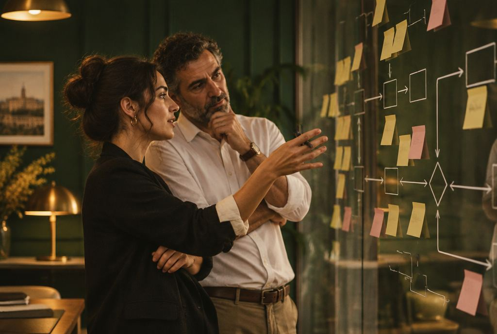
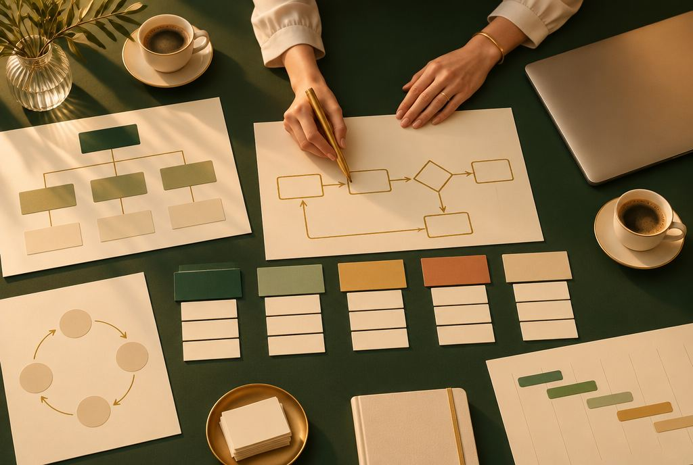
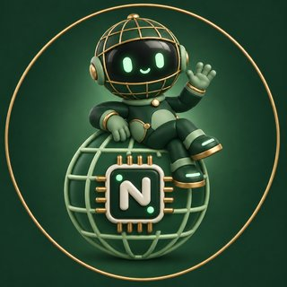

Diagnóstico desde dentro
Nos ponemos en la piel de cada persona de tu empresa, del dueño al último puesto, y localizamos qué no funciona y por qué.
Nyland Consulting · Sigue siendo tú
Entramos, escuchamos a cada persona de tu equipo y transformamos tus procesos con inteligencia artificial. Sin perder lo que te hace único.
Sin compromiso · 15 minutos · Directamente con nuestro equipo
Primero entendemos tu empresa. Después, proponemos.
Cuando llevas años dentro de tu empresa, dejas de ver lo que la frena. Nosotros llegamos sin costumbres, sin prisas y sin miedo a preguntar.
Te mostramos caminos nuevos, a ti y a tu equipo, que el día a día no deja ver.
Ponemos sobre la mesa cómo funciona de verdad tu empresa, sin suposiciones.
Conceptos nuevos que tu empresa sigue aplicando cuando nosotros ya no estamos en la sala.
Abrimos puertas que no sabías que estaban ahí.
Lo llamamos el efecto miércoles: ese día de la semana en que, sin motivo aparente, todo cuesta más. En tu empresa puede ser el miércoles, el lunes o el viernes. Casi siempre hay un motivo. Y casi nunca está en una herramienta.
Ejemplos ilustrativos basados en situaciones habituales. Pulsa una tarjeta para darle la vuelta.
Tú haces las preguntas. Tu equipo tiene las respuestas. Nosotros las encontramos.
Sin compromiso · 15 minutos · Directamente con nuestro equipo
En 20 minutos descubrirás cosas de tu empresa que nadie te había contado. Sin herramientas, sin coste y sin compromiso.
Gratis · Puedes darte de baja cuando quieras
Nos las dicen dueños y gerentes que llevan años haciendo bien su trabajo. El problema nunca es el oficio. Es todo lo que lo rodea.
“Hacemos presupuestos de implantes que nadie vuelve a llamar.
“Recepción no da abasto entre el teléfono y los pacientes que tiene delante.
“Los pacientes no vienen a la cita y nos enteramos tarde.
“Mando presupuestos y luego no tengo tiempo de perseguirlos.
“Me paso el día al teléfono coordinando cuadrillas.
“Las juntas de vecinos tardan meses y pierdo la pista de cada una.
La ingeniería de procesos estudia cómo se hace el trabajo de verdad: quién hace qué, en qué orden, con qué herramientas y dónde se atasca. Y lo rediseña para que todo avance sin esfuerzo.
Aquí se atascan el tiempo, el dinero y la paciencia del equipo.Mismo equipo, mismos clientes. Menos fricción en cada paso.
Quién hace cada tarea y cómo la vive.
En qué orden se hace y cuántas veces se repite.
Con qué se trabaja y qué sobra o falta.
Cómo viaja de una persona a otra y dónde se pierde.

Cada paso, de la primera llamada al cobro. Y marcamos dónde se pierde el tiempo y el dinero.
Dirección, recepción, comerciales, producción y limpieza. Quien vive el problema es quien mejor lo conoce.

Un mapa claro de dónde duele más, para atacar primero lo que más alivia.
Mensajes, agenda, email y facturas pueden conectarse entre sí, según la configuración de cada empresa.
Un panel sencillo para seguir la mejora mes a mes. Las cifras de la imagen son de ejemplo.
Todos. Por eso hablamos con todos.
Primero entendemos a las personas. Luego, los procesos.Lo vemos en cada empresa en la que entramos. Cuando a un trabajador le faltan herramientas, procesos claros o la formación adecuada, su eficiencia cae. Y lo que le pasa al trabajador acaba pasándole a la empresa.
Damos a cada puesto las herramientas y los procesos que necesita para dejar de pelearse con lo que no es su trabajo.
Formamos a cada persona para que domine lo nuevo desde el primer día. Una herramienta que nadie sabe usar no sirve de nada.
Que el trabajador sienta que se le escucha y que su trabajo se profesionaliza. Un equipo motivado es un equipo eficiente, y el empresario lo nota.
La inteligencia artificial la tiene cualquiera.
La inteligencia emocional para aplicarla, no.
Te enseñamos a aplicar la inteligencia emocional en tus procesos: ponerte en la piel de cada trabajador, prevenir la caída de un departamento antes de que ocurra y gestionar los días malos.
Departamento a departamento, proceso a proceso. Vemos cómo funciona de verdad, no como dice el organigrama.
Te enseñamos cómo vive su día tu recepcionista, tu comercial o quien limpia la oficina. Y por qué actúan como actúan.
Aprendes a leer las señales antes de que un equipo se colapse: la sobrecarga, el desgaste, el error que se repite.
Procesos que sostienen a la persona cuando no está al cien por cien. Y una forma de actuar cuando el día se tuerce.
Lo que falló se habla, se entiende y no se repite. El equipo crece con cada tropiezo en lugar de esconderlo.
Tus clientes notan la diferencia antes de saber explicarla: un equipo tranquilo, preparado y orgulloso de lo que hace.
El móvil es la herramienta que hoy usamos todos. Por eso te enseñamos lo fácil que es manejar tu panel empresarial desde él, estés donde estés.
Datos de ejemplo
No te instalamos una herramienta y desaparecemos. Desmontamos tu empresa proceso a proceso, entendemos por qué las cosas no funcionan y construimos lo que de verdad necesitas.
El Cambio Nyland no se explica. Se descubre.
Nos ponemos en la piel de cada persona de tu empresa, del dueño al último puesto, y localizamos qué no funciona y por qué.
Implantamos herramientas que alivian lo más urgente desde las primeras semanas, según el caso.
Con el estudio hecho, diseñamos una solución adaptada exactamente a cómo trabaja tu empresa. La tecnología se adapta a ti, no al revés.
Nos ocupamos de que todas las herramientas y procesos sigan funcionando, los actualizamos y los mejoramos mientras tu negocio crece. No te dejamos solo con la tecnología: nos encargamos de que funcione, hoy y dentro de un año.

La inteligencia artificial multiplica tus capacidades.
La inteligencia emocional decide cómo la usas.
Tú sigues siendo el mismo. Lo que cambia es todo lo que te rodea.
Diagnósticos en curso en empresas del sector sanitario e inmobiliario.
Si en el diagnóstico no encontramos nada que mejorar, te lo diremos.
Sin compromiso · 15 minutos · Directamente con nuestro equipo
Depende de cada empresa. Nuestro precio se mide por lo que te ahorramos, no por las horas que trabajamos. El diagnóstico inicial de 15 minutos no tiene coste.
Las primeras soluciones pueden estar funcionando en pocas semanas, según el caso. El software a medida llega después, cuando el estudio lo justifica.
No. Le quitamos lo que le estorba para que haga mejor su trabajo. Sigue siendo tu empresa.
No necesariamente. Primero vemos qué funciona y qué no. Lo que funciona, se queda.
No terminamos. El acompañamiento y el mantenimiento forman parte del servicio.
Porque quien vive el problema cada día es quien mejor lo conoce.
Sin compromiso · 15 minutos · Directamente con nuestro equipo
Te contactamos en menos de 24 horas laborables para fijar tus 15 minutos.